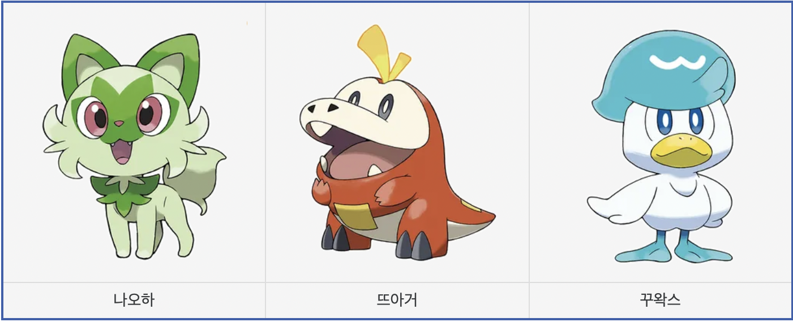

- 냐오하
- 꾸왁스
- 뜨아거
스타팅 포켓몬

포켓몬스터 시리즈의 팔데아지방 스타팅 포켓몬에는 나오하, 뜨아거, 꾸왁스가 있다.
이전 8세대의 가라르지방 스타팅 포켓몬들과 달리 다시 모든 스타팅 포켓몬이 최종 진화형에서 2차 타입이 붙게 되었다. 종류는 악-고스트-격투로, 히스이지방 스타팅 포켓몬들과 동일하며 배치만 달라졌다. 그러나 히스이 지방 스타팅 포켓몬들이 완벽한 절대 상성 관계를 이루었던 것과 달리, 팔데아 지방의 경우 불꽃/고스트의 라우드본이 마스카나에게 악 타입으로 약점을 찔리고, 웨이니발에게 물 타입으로 약점을 찔려서 독보적으로 불리하다. 고스트는 격투에 등배라 약점을 찌르지는 못하며, 심지어 스피드도 가장 느리다. 반면 웨이니발은 마스카나를 격투로 팰 수 있고, 라우드본도 물 타입으로 찌를 수 있어 상성상 가장 유리하다. 물론 마스카나 역시 스피드가 빠르고 풀 타입으로 웨이니발에게 선제 타격을 입힐 수 있어 서로 찌르는 관계.
다만 이것은 어디까지 기본 포켓몬 설계상의 이야기이고, 본작의 배틀시스템인 테라스탈을 사용 시 어떤 상황에서든 대응할 수 있기에 큰 문제는 아니다. 오히려 기존 세대들과 달리 사실상 스타팅 타입 간의 상성으로 인한 유불리가 무의미한 세대라고 볼 수도 있다.
한국어판 기준 세 마리 모두 3글자-3글자-4글자 순으로 진화한다.